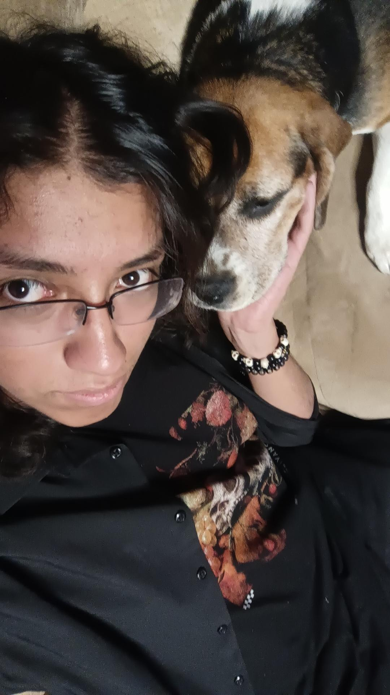

Que tal? Yo soy el verdadero Sir Matiu
Bienvenido a mi pagina web pije. Espero aprendas un poco mas de mi en este lugar
UN POCO SOBRE MI
Mi nombre es Mateo Isaias, tengo 19 años y actualmente estudio mi carrera universitaria. Me encantan los videojuegos, la musica, pasar tiempo con mis amigos y mi novia. Ademas de que en ocasiones edito videos o hago carteles.
Eh preparado 3 secciones en las que he puesto lo que para mi son los aspectos cruciales que debes conocer sobre mi. Por si alguna vez te llegaste a preguntar algo tan innecesario como cual es mi cancion favorita.
